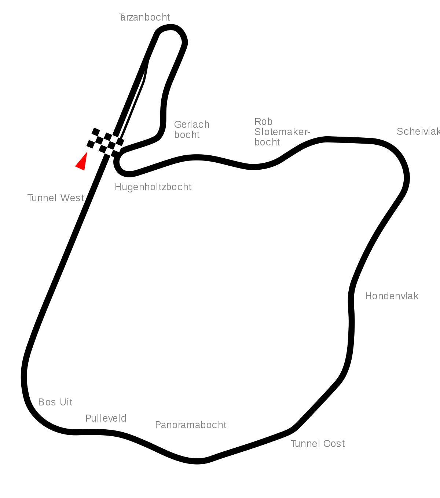

Il quinto campionato mondiale di Formula 1, compiuto al Circuito di Zandvoort in Olanda, fu stato vinto da Juan Manuel Fangio, che correva su una
Mercedes Benz.

Il Gran Premio d'Olanda 1955 fu la quinta gara della stagione 1955 del Campionato mondiale di Formula 1, disputata il 19 giugno sul Circuito
di Zandvoort. La manifestazione vide la vittoria di Juan Manuel Fangio su Mercedes